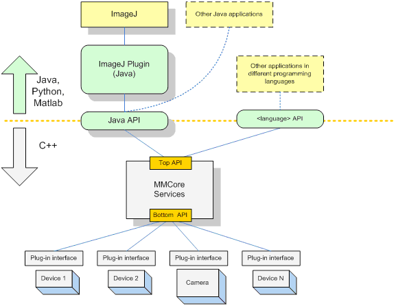

Microscope Automation Software:
Write from scratch
C, C++, Java, etc..
Write with Toolboxes
Matlab, Labview, Python
Vendor-neutral
Metamorph, Slidebook
Vendor-specific
Zen, NIS Elements, etc..

μManager - Open Source Software For Microscopes


- Started in 2005 as a lab project
- Close collaboration of programmers and cell biologists
- Idealistic attempt to create better and affordable tools
- Strong focus on support (website, email, remote help)
μManager - Open Source Software For Microscopes
- Supports devices from >150 vendors
- Code contributions from >100 authors
- >40,000 registered users, >6,000 microscopes
- >5,000 mentions (G Scholar), cited >1,600 times
Nagging questions...
Open Source, great, but...
- Rewarding/funding of tool deployment (versus algorithm development/biological application)
- Scattered tools: inefficient or diverse?
- Are we really empowering scientists?
What is the best structure for a project like Micro-Manager?
Thanks!

Ron Vale

Nenad Amodaj

Mark Tsuchida
μManagers:
Arthur Edelstein
Oleksiy Danikhno
Karl Hoover
Henry Pinkard
Ziah Dean
Chris Weisiger
Oleksiy Danikhno
Karl Hoover
Henry Pinkard
Ziah Dean
Chris Weisiger
Many, many code and documenation contributions from scientists, enthusiasts, and companies.
Supported by grants from the Sandler Foundation and NIH (NIBI) R01EB007187